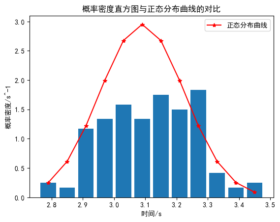
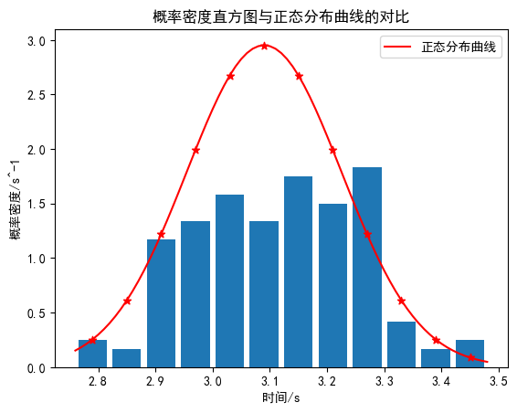

21 时间测量中随机误差的分布规律 计算器

初始化部分（不用阅读 直接跳过）
1 | import pandas as pd |
读取部分
请将你的数据放在同目录下的data.txt文件中，格式如下：
每一行一个数据(应该有200行)，例如：
1 | 2.94 |
输出为10个一行的表格
1 |
|
2.94 2.82 3.06 2.94 2.93 3.06 3.10 3.00 3.06 3.18
2.97 3.06 3.13 3.00 3.03 3.22 3.25 3.06 3.18 3.25
2.93 3.22 3.06 3.00 3.25 3.07 3.12 3.18 3.06 3.25
3.09 2.93 3.00 2.97 2.97 3.22 3.06 3.03 3.16 2.91
2.97 2.94 2.97 3.03 2.88 3.16 3.12 3.10 3.03 3.19
3.12 2.90 3.00 3.15 3.10 3.12 2.97 3.28 3.28 3.12
3.00 2.85 2.97 3.22 3.25 3.12 3.16 3.16 2.88 2.92
3.18 3.12 2.97 2.89 2.79 2.94 3.22 2.81 3.10 2.97
3.03 2.97 3.25 2.97 2.90 3.06 3.13 3.09 3.23 3.16
3.28 3.12 2.89 3.16 3.09 3.18 3.09 3.10 3.18 2.93
3.04 3.15 3.10 3.00 3.16 3.03 2.94 2.96 2.90 3.10
3.16 3.00 3.06 3.06 3.19 3.03 3.10 2.94 3.03 3.06
2.91 2.97 3.07 3.24 3.03 3.12 3.22 3.25 3.00 3.16
3.00 3.22 3.13 3.22 3.43 2.99 2.88 3.23 3.19 3.19
2.91 2.76 3.03 3.10 3.13 3.28 3.13 3.00 3.37 3.16
3.25 3.00 3.16 2.91 3.30 2.88 3.31 3.03 3.25 3.03
3.13 3.06 3.19 3.09 3.28 3.06 3.28 3.25 2.97 3.28
3.03 3.18 3.03 3.25 3.25 3.32 3.13 3.24 3.47 3.03
3.03 3.22 3.31 2.94 3.16 3.48 2.87 3.04 3.28 3.22
3.06 3.35 3.22 3.00 3.37 3.25 3.34 2.96 3.18 3.03
基础数据处理
计算平均值、标准差等统计量，并输出结果。
1 | a_bar=round(np.mean(a),2) |
平均值: 3.09
最大值: 3.48
最小值: 2.76
标准差: 0.1352
方差: 0.0183
极差: 0.72
计算分段 统计频率
计算分段统计频率，输出分段区间、频数、频率、频率密度和概率密度函数值。
1 | (Markdown) |
调节下面的N值来改变分段数目，默认是14段。
1 | def P(x,x_bar,sigma): |
[ 2.76 , 2.82 ],( 2.82 , 2.88 ],( 2.88 , 2.94 ],( 2.94 , 3.00 ],( 3.00 , 3.06 ],( 3.06 , 3.12 ],( 3.12 , 3.18 ],( 3.18 , 3.24 ],( 3.24 , 3.30 ],( 3.30 , 3.36 ],( 3.36 , 3.42 ],( 3.42 , 3.48 ],
一共12段，每段长度为0.06
普通格式：
区间 频数 频率 频率密度 概率密度函数值
( 2.76 , 2.82 ] 3 0.01 0.25 0.25
( 2.82 , 2.88 ] 2 0.01 0.17 0.61
( 2.88 , 2.94 ] 14 0.07 1.17 1.22
( 2.94 , 3.00 ] 16 0.08 1.33 1.99
( 3.00 , 3.06 ] 19 0.10 1.58 2.67
( 3.06 , 3.12 ] 16 0.08 1.33 2.95
( 3.12 , 3.18 ] 21 0.10 1.75 2.67
( 3.18 , 3.24 ] 18 0.09 1.50 1.99
( 3.24 , 3.30 ] 22 0.11 1.83 1.22
( 3.30 , 3.36 ] 5 0.03 0.42 0.61
( 3.36 , 3.42 ] 2 0.01 0.17 0.25
( 3.42 , 3.48 ] 3 0.01 0.25 0.09
Markdown格式：
|区间$|$频数$|$频率$|$频率密度$|$概率密度函数值$|
|:--:|:--:|:--:|:--:|:--:|
|$( 2.76 , 2.82 ]$|$ 3 $|$ 0.01 $|$ 0.25 $|$ 0.25 $|
|$( 2.82 , 2.88 ]$|$ 2 $|$ 0.01 $|$ 0.17 $|$ 0.61 $|
|$( 2.88 , 2.94 ]$|$ 14 $|$ 0.07 $|$ 1.17 $|$ 1.22 $|
|$( 2.94 , 3.00 ]$|$ 16 $|$ 0.08 $|$ 1.33 $|$ 1.99 $|
|$( 3.00 , 3.06 ]$|$ 19 $|$ 0.10 $|$ 1.58 $|$ 2.67 $|
|$( 3.06 , 3.12 ]$|$ 16 $|$ 0.08 $|$ 1.33 $|$ 2.95 $|
|$( 3.12 , 3.18 ]$|$ 21 $|$ 0.10 $|$ 1.75 $|$ 2.67 $|
|$( 3.18 , 3.24 ]$|$ 18 $|$ 0.09 $|$ 1.50 $|$ 1.99 $|
|$( 3.24 , 3.30 ]$|$ 22 $|$ 0.11 $|$ 1.83 $|$ 1.22 $|
|$( 3.30 , 3.36 ]$|$ 5 $|$ 0.03 $|$ 0.42 $|$ 0.61 $|
|$( 3.36 , 3.42 ]$|$ 2 $|$ 0.01 $|$ 0.17 $|$ 0.25 $|
|$( 3.42 , 3.48 ]$|$ 3 $|$ 0.01 $|$ 0.25 $|$ 0.09 $|
统计σ分布
输出结果 1σ、2σ、3σ的分布情况。
A类不确定度
1 | sigm=[0]*4 |
σ分布：
σ 频数 频率
1 133 0.665
2 192 0.96
3 200 1.0
A类不确定度: 0.018737764016018555
画图
1 | #折线图 |

